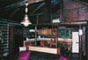

Simple Life
Because sometimes you don't need a sidebar
Introduction
 A simple, XHTML 1.0 tableless template without a default sidebar. You can add one if you want using the custom CSS width classes, but sometimes, all you really need is one column.
A simple, XHTML 1.0 tableless template without a default sidebar. You can add one if you want using the custom CSS width classes, but sometimes, all you really need is one column.
The template displays properly in all the usual browsers, with an added filter hack to get .png opacity working in IE. If you look in the html source near the top, you'll see a conditional comment that loads a style sheet for IE 5.0 and up. You can get rid of this, and everything will still work, except you'll loose the purty content dropshadow.
- Gecko deeeelicious
- Opera like hotdogs
- Safari wouldn't say no to 2nds
- Internet Explorer it tastes like burning...
 Total image size of this template comes in just under the new 60kb limit of OWD, so enjoy. It's nice to have a little more wiggle room with the templates. Maybe next we could work on getting Javascript?
This Design started out as the promo site for a friend's cottage. If you're curious about the original, check out Alice's Cabin.